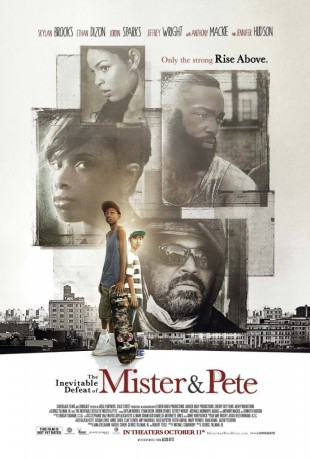
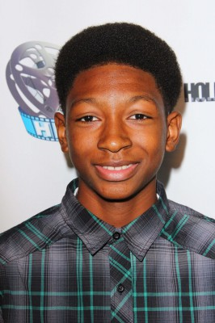

#2800 Mister & Pete gegen den Rest der Welt
Alternativ: The Inevitable Defeat of Mister & Pete
 
 IMDB-Wertung: 7.5 / 10
IMDB-Wertung: 7.5 / 10  Metascore: 61
Metascore: 61 
Der 13-jährige Mister hat ein Problem, als seine Mutter verhaftet wird. Er muss nun für sich und den neunjährigen Pete sorgen, ständig Essen auftreiben und den wohlmeinenden Menschen vom Jugendamt entkommen, denn ins Heim wollen die beiden auf keinen Fall. Mister muss mehr meistern, als einem Kind zugemutet werden sollte. Der Überlebenskampf des Duos wird getragen von Misters Verwundbarkeit und nicht von seinem Betragen, mit dem er den Anschein erwecken will, reifer zu sein, als er ist. Es ist der Sommer, in dem Mister und Pete davon kosten, was es heißt, erwachsen zu sein, aber sich ihre kindliche Naivität bewahren. Und es ist der Sommer, in dem beide eine wichtige Lektion lernen: Dass man manchmal auch Hilfe annehmen muss…
Jahr: 2013
Dauer: 108 Minuten
FSK: 12
Land: USA Studio: LionsgateTonspuren: DTS - ,
Untertitel:
Auflösung: 1080p (1920x800) Größe: 6256 MB
Genre: Drama
Regisseur: George Tillman Jr.
Drehbuch: Michael Starrbury
Soundtrack: Mark Isham, Alicia Keys
Darsteller:
-  Skylan Brooks als Mister
- Ethan Dizon als Pete
- Jennifer Hudson als Mom Gloria
 Adewale Akinnuoye-Agbaje als Sergeant Pike
Adewale Akinnuoye-Agbaje als Sergeant Pike- Jordin Sparks als Alice
- Julito McCullum als Dip Stick
 Anthony Mackie als Kris
Anthony Mackie als Kris Jeffrey Wright als Henry
Jeffrey Wright als Henry- Kenneth Maharaj als Store Owner
- Joseph Adams als Mr. Carey
- Joey Auzenne als Officer Duckworth
 Adriane Lenox als Group Home Lady
Adriane Lenox als Group Home Lady- Kate Geller als Assistant
- Michael Chmiel als Clerk
- Marcus Carl Franklin als College Kid
- Tarik Lowe als Crew Member #1
 Rob Morgan als Cuffed Man Curtis
Rob Morgan als Cuffed Man Curtis- Massiel Mordan als Waitress
- Eric Ruffin als Young Boy
- Rege Lewis als B-Ball
- Martha Millan als Pete's Mom
 Adam Trese als Alice's Boyfriend
Adam Trese als Alice's Boyfriend- Jimmy Hays als Bus Driver
 José Báez als Unemployed Man / Restaurant Patron , uncredited
José Báez als Unemployed Man / Restaurant Patron , uncredited Dj Nino Carta als Crew Member #2 , uncredited
Dj Nino Carta als Crew Member #2 , uncredited- Julyza Commodore als Student , uncredited
- Jordan Fargo als Teenager , uncredited
- Kennedy Moronta als Drug Dealer , uncredited
- Lil Rhee als Subway Commuter , uncredited
- Amelia Scaramucci als McDonald's Employee , uncredited
- Nikkieli DeMone als Officer Redd
- Kate Buddeke als Neighbor Lady
- Patrick Wetzel als Supermarket Employee
- Chandler Frantz als Other Kid
- Lana Giacose als Young Woman
- Eddie R. Brown III als Dealer
Datei: X:\2013(I-M)\Mister & Pete gegen den Rest der Welt (2013, FSK12, 1920x800).mkv seit 18.12.2015
Festplatte: HD 2013(I-Z)-2014(A-Z)
 Es gibt insgesamt 89 Filme in der Gruppe '2013(I-M)'
Es gibt insgesamt 89 Filme in der Gruppe '2013(I-M)'